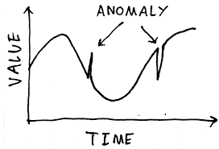
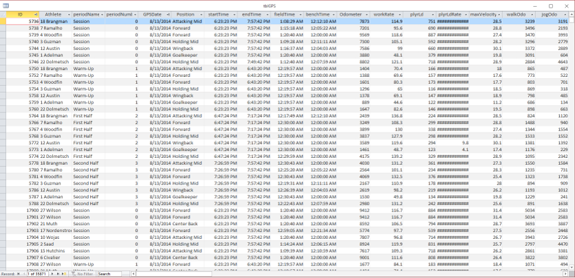

Whoops
Alright, so maybe I’m a liar and part 2 took…a while…to come to fruition. Sorry about that. In my defense, I’ve traveled to four different countries for work, worked on sprint step analysis for @DrBradDeWeese (hopefully we can share some of that soon), and bought a new laptop without any of my blogging packages installed so at least cut me a little slack. Now, where were we…
A Refresher
I started off last time by mentioning “Putting the ‘I’ Back in Team” [6]. If you haven’t read it, I would recommend starting there before going any further. There were three topics of conversation in the paper: MBI (Imma let everyone finish arguing before wading into that), SPC (last post), and a version of anomaly detection via mixed modeling (this post). If you’re interested in further background information on what I’ll be discussing today, here are the papers that originally sent me down the rabbit hole: [1,2,5]. Now, you’ll probably look at those papers and say, “Matt, those have nothing to do with mixed models,” and you wouldn’t be wrong. But they gave me some ideas for model building and how to define an outlier/anomaly (and next post will probably look at using non-linear methods to predict sRPE) so give them a read if you feel so inclined.
Anomaly Detection
 The concept of anomaly detection is pretty straightforward: Given a dataset, can we detect data that are significantly different from our predictions? The specific field will then dictate what we do with this anomalous data. For instance, credit card fraud detection is probably the most well-known example of anomaly detection–your spending habits (typical purchase price, location, type of purchase, etc.) are used to build an individualized consumer profile. Purchases that fall significantly outside that profile (say, making a purchase in China without notifying your bank…I didn’t do that, for the record) are flagged and automatically rejected. In the case of my credit card company, the transaction is declined and I receive both a text and email asking if that was actually me making the purchase. Once I confirm my identity hasn’t been stolen I can have the merchant run my card again without issue, and the credit card company has new data to build a more robust consumer profile that slowly integrates my new (well, old but in a new country) spending habits into the model.
In reality, if you’ve been using traditional statistics, MBI, or SPC to identify outliers for follow-up in your monitoring data, you’ve been performing your own version of anomaly detection. That is, you’re looking for data outside the norm or what you would predict–an anomaly if you will. While SPC is great for taking an individualized approach to detecting changes in athletes’ physical characteristics, fatigue state, etc., one of the main issues for individual athlete monitoring is that SPC has a lead time; you need to collect a number of observations on an athlete before you can build a profile of what’s “normal.” Unfortunatley, sport isn’t conducive to “sit and wait,” and non-compliance, absence, and injury make building an individual profile even harder. That’s where tools like mixed models step in. Instead of relying only on individual data (SPC) or pooled data (simple or multiple regression), mixed models attempt to strike a balance between individualization and the “widsom of the crowd.” In theory, it’s the best of both worlds. Athletes with a ton of historical data will have more individualized random effects to complement the model’s fixed effects, whereas we can lean more heavily on the model’s fixed effects for athletes with less data (more on fixed and random effects in just a second).
RM ANOVA vs. Mixed Modeling
In the case of longitudinal analyses, mixed models (or you might see them called linear mixed models) are very similar to the garden-variety repeated-measures ANOVA you’re likely familiar with: a model is built to predict a dependent variable from an independent variable / series of independent variables (between-subjects effects, now called fixed effects) while also accounting for individual variation (within-subjects effects, now part of the random effects). There are some distinct differences between the two appraoches, though. For one, mixed models don’t require complete or balanced datasets. That is, athletes with missing data won’t need to be thrown out or have missing values imputed. This fact alone makes mixed models incredibly powerful tools for model building in sports science. Another important difference between the two approaches is how random effects work. In RM ANOVA, we can specify we’re analyzing data for the same individuals over time, but that’s about it. This can be a problem in the data we collect, where differences can exist between phases of the season (pre-season vs. non-conference vs. conference in the case of college sports) or between seasons (different playstyles, maturation, improved fitness levels, new coach, etc.). RM ANOVA isn’t able to account for this clustering or nesting of variables (note: we can model the interaction between these variables via fixed effects, but that’s a bit different), whereas mixed model random effects are. And let me tell you, random effects can get pretty complicated with especially complex designs, but I’ll leave that for someone smarter to explain. For instance, you can check out [3] or [4]. The latter contains everything you could ever want to know about mixed models and more…much more, while chapters 13, 14, and 19 of [3] will equip you with what you need to know in an easier to digest format.
Building a Model
As always, it’s much easier to show than tell with this stuff, so how about an example. You can find the data for this post here.
## # A tibble: 2,930 x 13
## athlete date season session activity field.minutes odometer
## <fct> <date> <fct> <int> <fct> <dbl> <int>
## 1 Jonath~ 2014-08-13 Fall ~ 1 Soccer 1 75.3 7201
## 2 Dhaki ~ 2014-08-13 Fall ~ 1 Soccer 1 69.5 7300
## 3 Corey ~ 2014-08-13 Fall ~ 1 Soccer 1 76.6 7586
## 4 Issac ~ 2014-08-13 Fall ~ 1 Soccer 1 80.7 3880
## 5 Phoeni~ 2014-08-13 Fall ~ 1 Soccer 1 59.1 5774
## 6 Carrol~ 2014-08-13 Fall ~ 1 Soccer 1 80.7 7807
## 7 Neulyn~ 2014-08-13 Fall ~ 1 Soccer 1 69.6 7617
## 8 Jonath~ 2014-08-14 Fall ~ 1 Soccer 1 82.3 3962
## 9 Bobby ~ 2014-08-14 Fall ~ 1 Soccer 1 82.1 3792
## 10 Daniel~ 2014-08-14 Fall ~ 1 Soccer 1 79.3 3671
## # ... with 2,920 more rows, and 6 more variables: work.rate <dbl>,
## # plyr.ld <int>, hi.run <int>, duration <int>, rpetl <int>, phase <fct>| athlete | date | season | session | activity | field.minutes | odometer | work.rate | plyr.ld | hi.run | duration | rpetl | phase |
|---|---|---|---|---|---|---|---|---|---|---|---|---|
| Jonathan Sanchez | 2014-08-13 | Fall 2014 | 1 | Soccer 1 | 75.30000 | 7201 | 95.6 | 690 | 1440 | 90 | 450 | PRE |
| Dhaki al-Naim | 2014-08-13 | Fall 2014 | 1 | Soccer 1 | 69.46667 | 7300 | 105.1 | 592 | 1129 | 90 | 450 | PRE |
| Corey Klocker | 2014-08-13 | Fall 2014 | 1 | Soccer 1 | 76.61667 | 7586 | 99.0 | 660 | 1222 | 90 | 450 | PRE |
| Issac Martinez | 2014-08-13 | Fall 2014 | 1 | Soccer 1 | 80.66667 | 3880 | 48.1 | 379 | 32 | 90 | 450 | PRE |
| Phoenix Lee | 2014-08-13 | Fall 2014 | 1 | Soccer 1 | 59.08333 | 5774 | 97.7 | 539 | 718 | 90 | 360 | PRE |
| Carroll Bond | 2014-08-13 | Fall 2014 | 1 | Soccer 1 | 80.66667 | 7807 | 96.8 | 714 | 1080 | 90 | 540 | PRE |
| Neulyn Whyte | 2014-08-13 | Fall 2014 | 1 | Soccer 1 | 69.65000 | 7617 | 109.3 | 718 | 1300 | 90 | 720 | PRE |
| Jonathan Sanchez | 2014-08-14 | Fall 2014 | 1 | Soccer 1 | 82.33333 | 3962 | 48.1 | 435 | 314 | 90 | 450 | PRE |
| Bobby Landry | 2014-08-14 | Fall 2014 | 1 | Soccer 1 | 82.06667 | 3792 | 46.2 | 439 | 370 | 90 | 270 | PRE |
| Daniel Thompson | 2014-08-14 | Fall 2014 | 1 | Soccer 1 | 79.28333 | 3671 | 46.3 | 381 | 132 | 90 | 270 | PRE |
The full file contains four seasons’ worth of practice sRPE and GPS data. I’ve already done some data cleaning to remove data entry errors (about 40 records total across the four seasons; most were games incorrectly coded as practice), so you should be cognizant of the fact your data won’t always be this “pretty.” Consistent data collection and entry protocols can help mitigate some of these problems, but it’s always good to double check your data prior to modeling or making any decisions based on your models. We’ll use the data to build and test a predictive model for sRPE-derived training load (sRPE * duration; rpetl in the file) before applying it similarly to [6].

If you’ve ever seen a GPS output file, you’ll know they can be pretty overwhelming. When I was with the soccer team, Catapult Sprint could spit out something like 250 variables (I think OpenField has even more). We exported 75; we actually looked at 7. Those other 70-ish variables were of the just-in-case variety–the variables you may want to look at one day, but realistically you know you’ll never give them a second glance. But hey, you have them. Anyway, of those seven variables, research has shown there’s a strong correlation between sRPE, total distance, and Player Load (PL) and a nearly perfect correlation between total distance and PL. We used both when it came to progamming our practice sessions because they do provide slightly different information, but from a model-building standpoint the nearly perfect correlation (aka, multicollinearity) between total distance and PL is problematic. It will bias the model coefficients and affect our ability to interpret the model and individual variable importance within the model. So step one in our process will be to examine the correlation coefficients between the variables in our dataset. We can examine the relationships between our variables very easily with cor() from the base stats package and the corrplot package.
# import the data
rpe.data <- read.csv("prediction-data.csv")
# convert the data to data.table format
rpe.data <- data.table(rpe.data)
# conver the date column to date format
rpe.data[, date := as.Date(date, format = "%m/%d/%Y")]
# Convert all predictor variables to numeric; this will save us a lot of heartache later
rpe.data[, c("field.minutes", "odometer", "work.rate", "plyr.ld", "hi.run", "duration") :=
lapply(.SD, as.numeric), .SDcols = field.minutes:duration]
# visualize the correlation matrix from cor()
corrplot(corr = cor(rpe.data[, field.minutes:rpetl]),
method = "number", type = "upper", diag = FALSE)
Just as suspected, we have a nearly perfect correlation (0.94) between total distance and PL. A general rule of thumb I’ve seen when it comes to multicollinearity is a correlation coefficient > 0.8 or 0.9, so our 0.94 between total distance and PL definitely fits the bill. In such cases, you could choose either variable with essentially interchangeable results. For sake of consistency with other research, I’m going to use total distance, but you’re welcome to re-run the model with PL instead.
# Drop player load from the data frame
rpe.data$plyr.ld <- NULL
# re-visualize the data
corrplot(corr = cor(rpe.data[, odometer:rpetl]),
method = "number", type = "upper", diag = FALSE)
That’s better. Let’s get to model building.
Visualizing the Data
The first step in the model building process is always to examine your data visually. Visualizations help us understand what we’re working with and can aid us in fitting models that are appropriate for the dataset. Let’s start off by plotting histograms of the pooled rpetl values and rpetl for each season.
# plot an overall histogram of the rpetl data
ggplot(rpe.data, aes(x = rpetl)) + geom_histogram() + theme_bw()
# plot individual histograms for each season
ggplot(rpe.data, aes(x = rpetl)) + geom_histogram() + facet_wrap(~season) +
theme_bw()
In both views of the data, there’s some pretty severe positive skew going on. If you’re familiar with common statistical practices in sports science, you already know how we’re going to deal with this…but humor me for now, please.
Let’s go ahead and plot the relationships between each of the potential predictor variables and rpetl. Each colored line represents the regression line for its respective season. We’ll leverage the gridExtra package to combine the individual plots into a single graphic.
rpe.minutes <- ggplot(rpe.data, aes(x = field.minutes, y = rpetl)) + geom_point() +
geom_smooth(aes(colour = season), method = "lm", se = FALSE) + theme_bw()
rpe.odometer <- ggplot(rpe.data, aes(x = odometer, y = rpetl)) + geom_point() +
geom_smooth(aes(colour = season), method = "lm", se = FALSE) + theme_bw()
rpe.rate <- ggplot(rpe.data, aes(x = work.rate, y = rpetl)) + geom_point() +
geom_smooth(aes(colour = season), method = "lm", se = FALSE) + theme_bw()
rpe.hirun <- ggplot(rpe.data, aes(x = hi.run, y = rpetl)) + geom_point() +
geom_smooth(aes(colour = season), method = "lm", se = FALSE) + theme_bw()
rpe.duration <- ggplot(rpe.data, aes(x = duration, y = rpetl)) + geom_point() +
geom_smooth(aes(colour = season), method = "lm", se = FALSE) + theme_bw()
gridExtra::grid.arrange(rpe.minutes, rpe.odometer, rpe.rate, rpe.hirun, rpe.duration)
This time, pay attention to the shape of the relationships (using colour on the plots was a jumbled mess, so use your imagination or experiment with facetting by season for each variable). In each case, as the values of the variables increase, the spread of the resultant rpetl values also increases. Again, you probably know how we’re going to deal with this, but let’s start off with some basic models first.
Building the Model
First, let’s get acquainted with the syntax we’ll be using. I’m using the lme4 package today, but nlme is also extremely popular (and can do a few things lme4 can’t). If you’ve used lm() or aov(), the syntax is virtually identical. You’ll write an equation with the left and right-hand sides separated by “~”. The dependent variable is on the LHS, whereas the predictors are on the RHS. The major difference from lm() will be the inclusion of the random effect(s). They should be pretty easy to spot in the following formula.
# Build the random intercept-only model
random.intercept.model <- lmer(rpetl ~ (1|season/athlete),
data = rpe.data, REML = FALSE)
summary(random.intercept.model)## Linear mixed model fit by maximum likelihood ['lmerMod']
## Formula: rpetl ~ (1 | season/athlete)
## Data: rpe.data
##
## AIC BIC logLik deviance df.resid
## 36342.4 36366.3 -18167.2 36334.4 2926
##
## Scaled residuals:
## Min 1Q Median 3Q Max
## -2.1801 -0.6797 -0.2002 0.4533 4.5445
##
## Random effects:
## Groups Name Variance Std.Dev.
## athlete:season (Intercept) 586.5 24.22
## season (Intercept) 1093.5 33.07
## Residual 13801.3 117.48
## Number of obs: 2930, groups: athlete:season, 103; season, 4
##
## Fixed effects:
## Estimate Std. Error t value
## (Intercept) 201.29 16.89 11.92This is called the random intercept-only model because, well, that’s the only thing in the model. In lmer random effects are defined with (random slope|random intercept). This is where things get really complicated, and to be honest, I don’t completely understand all the intricacies. Regardless, the general gist is that we can model differences in both the level and slope of the relationship between the predictor variables and rpetl.
In the above model, we’ve defined athlete nested within season as a random intercept effect. That means the model assumes the slope of the relationship between the predictors and sRPE is the same across athletes, but the intercept of the model for each athlete is in a different location each season. This makes sense when you think about it. We know sRPE is a “global” indicator of training intensity; that is, it’s affected by both the physiological and psychological state of the athlete (fitness level, fatigue, outside stressors, etc.). So we would expect the resultant rpetl to differ in magnitude between athletes and to differ within athletes across seasons. We can see this in the example plot below. Notice a majority of the athletes’ regression lines are in different locations.

We could also have a random slope-only model. In that case, the slope of the relationship between the predictors and the DV is allowed to vary, whereas the intercepts are not. In reality, this type of model would make little sense most of the time as differences in slopes would typically lead to differences in intercepts as well.
And finally, we can model both random slopes and random intercepts. In this case, both the level and slope of the relationship are allowed to differ. There is some evidence to support this approach as [1] showed variable importance differs across athletes, but modeling something like that is well beyond an introduction to the method. We’ll stick to a random intercept-only model for today.
Adding Fixed Effects
Model building is a pretty controversial subject. Different approaches exist, including entry of all variables into the model at once, sequential entry of variables into the model, and stepwise entry and deletion of the variables to find the model of best fit. The latter is especially controversial and can be seen as fishing for the best model. It is possible for this approach to over-fit the data and to make little sense from a practical standpoint (statistical significance is prioritized over practical significance), but it tends to be the go-to approach in building predictive models. We can overcome this approach’s shortcomings, though, by 1) using variables that have empirical support (e.g. total distance, heart rate load, pre-training wellness, etc.), 2) performing stepwise analysis on blocks of fixed effects (aka, feature sets; see [2] for an example), and 3) using cross-validation (siccing our models on previously unseen data to compare their abilities to generalize to new data). We’ll get into cross-validation some other time.
We already have our block of fixed effects to test (season, training phase, time spent active in drills [field.minutes], total distance, work rate, hi-speed running distance [> 14.4 kph], and total practice duration), so we can begin adding them to the model and testing their overall effect. Updating models can be done a couple different ways in R. For one, you can manually write the code each time (see the above lme4 code as an example), or you can leverage the update() function. I’ll be using update(), so here’s the skinny on how it works: update() needs two pieces of information, 1) the model you want to update and 2) how you want to update it. We defined the random intercept model earlier, so we would tell the function we want to update random.intercept.model by calling update(random.intercept.model), then spelling out how we want to update it. The syntax is the same as what we used above with the LHS being the dependent variable and the RHS being the predictor variables. So for instance, if we wanted to add total distance to the model, we would call
# Using update() to update statistical models
total.distance.model <- update(random.intercept.model, .~. + odometer)## Warning: Some predictor variables are on very different scales: consider
## rescalingWe’ll come back to that error in a second. First, in the above code we tell R we want to update the random.intercept.model by adding odometer to the fixed effects. We also tell the function to retain the already-established variables with .~.. Alternatively, if you wanted to start fresh on the predictor side of things, you could call update(random.intercept.model, .~ odometer + (1|season/athlete)).
Now that we’ve created our shiny new total.distance.model, we want to determine if adding total distance as a fixed effect statistically improved the model’s fit. This can be done in R with the anova() function.
# Compare models with the anova() command
anova(random.intercept.model, total.distance.model)## Data: rpe.data
## Models:
## random.intercept.model: rpetl ~ (1 | season/athlete)
## total.distance.model: rpetl ~ (1 | season/athlete) + odometer
## Df AIC BIC logLik deviance Chisq Chi Df
## random.intercept.model 4 36342 36366 -18167 36334
## total.distance.model 5 34539 34569 -17265 34529 1805.3 1
## Pr(>Chisq)
## random.intercept.model
## total.distance.model < 2.2e-16 ***
## ---
## Signif. codes: 0 '***' 0.001 '**' 0.01 '*' 0.05 '.' 0.1 ' ' 1There are four main things you can examine in this output: 1) the AIC, 2) the BIC, 3) the log-likelihood, and 4) the p-value for the chi-squared test comparing the log-likelihood of the two models. AIC, BIC, and logLik help us understand how well the models fit the data; values closer to zero are better. The change in logLik allows us determine if the change in the model fit is statistically significant (see [3] if you’re interested in the math), although there are two important caveats. 1) the models must be fit with maximum likelihood, not restricted maximum likelihood (REML = FALSE), and 2) subsequent models should be nested. That is, later models should contain all the variables from previous models (this will be clearer in a second). We can see from the above output that inclusion of total distance as a fixed effect statistically improved the model’s fit of the data with a p-value of 2 x 10^(-16). Let’s go ahead and add work rate, hi-speed running distance, time spent in drills, and total practice duration to the model and compare each step along the way.
model.1 <- update(total.distance.model, .~. + work.rate)## Warning: Some predictor variables are on very different scales: consider
## rescalingmodel.2 <- update(model.1, .~. + hi.run)## Warning: Some predictor variables are on very different scales: consider
## rescalingmodel.3 <- update(model.2, .~. + field.minutes)## Warning: Some predictor variables are on very different scales: consider
## rescalingmodel.4 <- update(model.3, .~. + duration)## Warning: Some predictor variables are on very different scales: consider
## rescalinganova(total.distance.model, model.1, model.2, model.3, model.4)## Data: rpe.data
## Models:
## total.distance.model: rpetl ~ (1 | season/athlete) + odometer
## model.1: rpetl ~ (1 | season/athlete) + odometer + work.rate
## model.2: rpetl ~ (1 | season/athlete) + odometer + work.rate + hi.run
## model.3: rpetl ~ (1 | season/athlete) + odometer + work.rate + hi.run +
## model.3: field.minutes
## model.4: rpetl ~ (1 | season/athlete) + odometer + work.rate + hi.run +
## model.4: field.minutes + duration
## Df AIC BIC logLik deviance Chisq Chi Df
## total.distance.model 5 34539 34569 -17265 34529
## model.1 6 34456 34492 -17222 34444 84.818 1
## model.2 7 34397 34439 -17192 34383 61.045 1
## model.3 8 34365 34413 -17175 34349 33.916 1
## model.4 9 33701 33755 -16842 33683 665.894 1
## Pr(>Chisq)
## total.distance.model
## model.1 < 2.2e-16 ***
## model.2 5.578e-15 ***
## model.3 5.756e-09 ***
## model.4 < 2.2e-16 ***
## ---
## Signif. codes: 0 '***' 0.001 '**' 0.01 '*' 0.05 '.' 0.1 ' ' 1Each subsequent model is a statistically significant improvement over the previous. Let’s further add season and phase within season as fixed effects.
model.5 <- update(model.4, .~. + season)## Warning: Some predictor variables are on very different scales: consider
## rescaling## boundary (singular) fit: see ?isSingularmodel.6 <- update(model.5, .~. + phase)## Warning: Some predictor variables are on very different scales: consider
## rescaling## boundary (singular) fit: see ?isSingularanova(model.4, model.5, model.6)## Data: rpe.data
## Models:
## model.4: rpetl ~ (1 | season/athlete) + odometer + work.rate + hi.run +
## model.4: field.minutes + duration
## model.5: rpetl ~ (1 | season/athlete) + odometer + work.rate + hi.run +
## model.5: field.minutes + duration + season
## model.6: rpetl ~ (1 | season/athlete) + odometer + work.rate + hi.run +
## model.6: field.minutes + duration + season + phase
## Df AIC BIC logLik deviance Chisq Chi Df Pr(>Chisq)
## model.4 9 33701 33755 -16842 33683
## model.5 12 33699 33771 -16838 33675 8.1387 3 0.04323 *
## model.6 15 33358 33448 -16664 33328 346.9856 3 < 2e-16 ***
## ---
## Signif. codes: 0 '***' 0.001 '**' 0.01 '*' 0.05 '.' 0.1 ' ' 1Again, inclusion of season and phase statistically improved the model’s fit. We could continue to make our model more complicated by modeling interactions and different random effects structures, but I don’t want to get too far into the weeds today.
Centering the Data
Instead, I want to draw your attention to the error we kept receiving each time a new model was created: “Warning: Some predictor variables are on very different scales: Consider rescaling.” Let’s print a summary of model.6.
summary(model.6)## Linear mixed model fit by maximum likelihood ['lmerMod']
## Formula: rpetl ~ (1 | season/athlete) + odometer + work.rate + hi.run +
## field.minutes + duration + season + phase
## Data: rpe.data
##
## AIC BIC logLik deviance df.resid
## 33358.3 33448.1 -16664.2 33328.3 2915
##
## Scaled residuals:
## Min 1Q Median 3Q Max
## -2.9356 -0.6017 -0.0475 0.4800 5.7434
##
## Random effects:
## Groups Name Variance Std.Dev.
## athlete:season (Intercept) 956 30.92
## season (Intercept) 0 0.00
## Residual 4796 69.25
## Number of obs: 2930, groups: athlete:season, 103; season, 4
##
## Fixed effects:
## Estimate Std. Error t value
## (Intercept) -1.140e+02 1.622e+01 -7.028
## odometer 2.841e-02 4.529e-03 6.274
## work.rate 2.776e-01 2.037e-01 1.362
## hi.run 4.588e-02 6.904e-03 6.645
## field.minutes -8.601e-01 2.943e-01 -2.922
## duration 3.348e+00 1.375e-01 24.341
## seasonFall 2015 -1.998e+01 9.113e+00 -2.193
## seasonFall 2016 -1.090e+01 9.876e+00 -1.104
## seasonFall 2017 -3.363e+01 1.051e+01 -3.200
## phaseNC 1.211e+01 3.397e+00 3.564
## phasePOST 3.776e+00 4.262e+00 0.886
## phasePRE 8.011e+01 4.549e+00 17.609
##
## Correlation of Fixed Effects:
## (Intr) odomtr wrk.rt hi.run fld.mn duratn sF2015 sF2016 sF2017
## odometer 0.704
## work.rate -0.815 -0.892
## hi.run 0.010 -0.417 0.127
## field.mints -0.683 -0.823 0.791 0.197
## duration -0.305 -0.164 0.133 -0.052 -0.238
## sesnFll2015 -0.311 0.023 -0.005 -0.047 -0.034 0.044
## sesnFll2016 -0.310 0.033 -0.023 -0.029 -0.032 0.098 0.510
## sesnFll2017 -0.309 0.025 0.004 -0.063 0.000 0.048 0.479 0.452
## phaseNC 0.053 0.046 -0.074 -0.055 -0.014 -0.210 -0.017 -0.084 -0.045
## phasePOST 0.001 0.064 -0.069 -0.149 0.026 -0.132 -0.056 -0.055 -0.037
## phasePRE 0.117 0.118 -0.104 -0.111 -0.073 -0.249 -0.007 -0.068 -0.039
## phasNC phPOST
## odometer
## work.rate
## hi.run
## field.mints
## duration
## sesnFll2015
## sesnFll2016
## sesnFll2017
## phaseNC
## phasePOST 0.475
## phasePRE 0.522 0.367
## fit warnings:
## Some predictor variables are on very different scales: consider rescaling
## convergence code: 0
## boundary (singular) fit: see ?isSingularFrom reading this post it seems this error can happen for a few different reasons, including fixed effects that are magnitudes different from one another and model coefficients that are magnitudes different from one another. If you look at the data and the model output, check and check. It would be a good idea to center our variables then. For a discussion on centering, see [3]; to see it in practice, see [2]. I’m going to use grand mean centering (centering on pooled data) of the fixed effects similar to R1 from [2]. I do want to preserve the fact that we’re examining data across multiple seasons, so I’ll be including by = season in the data centering call below.
rpe.scaled <- rpe.data
# Create scaled versions of each of the fixed effects
# as.vector(scale()) is required as scale() normally returns a matrix
rpe.scaled[, c("field.minutes", "odometer", "work.rate", "hi.run", "duration") :=
lapply(.SD, function(x) as.vector(scale(x))),
.SDcols = field.minutes:duration, by = season]Grand mean centering alters the model coefficients, but it doesn’t actually change the interpretation of the model. So we’ll skip the rigamarole of building each step of the model in favor of only creating the scaled version of model.6.
scaled.model.6 <- lmer(rpetl ~ (1|season/athlete) + odometer + work.rate + hi.run +
field.minutes + duration + season + phase,
data = rpe.scaled, REML = FALSE)## boundary (singular) fit: see ?isSingularsummary(scaled.model.6)## Linear mixed model fit by maximum likelihood ['lmerMod']
## Formula: rpetl ~ (1 | season/athlete) + odometer + work.rate + hi.run +
## field.minutes + duration + season + phase
## Data: rpe.scaled
##
## AIC BIC logLik deviance df.resid
## 33418.0 33507.7 -16694.0 33388.0 2915
##
## Scaled residuals:
## Min 1Q Median 3Q Max
## -2.9205 -0.6155 -0.0426 0.4741 5.5493
##
## Random effects:
## Groups Name Variance Std.Dev.
## athlete:season (Intercept) 964.1 31.05
## season (Intercept) 0.0 0.00
## Residual 4896.3 69.97
## Number of obs: 2930, groups: athlete:season, 103; season, 4
##
## Fixed effects:
## Estimate Std. Error t value
## (Intercept) 232.516 7.079 32.845
## odometer 37.013 5.932 6.239
## work.rate 6.486 4.298 1.509
## hi.run 14.987 2.307 6.496
## field.minutes -11.296 3.933 -2.872
## duration 52.126 2.189 23.813
## seasonFall 2015 -33.928 9.143 -3.711
## seasonFall 2016 -77.060 9.831 -7.838
## seasonFall 2017 -87.543 10.488 -8.347
## phaseNC 13.570 3.432 3.954
## phasePOST 4.376 4.317 1.014
## phasePRE 81.014 4.597 17.624
##
## Correlation of Fixed Effects:
## (Intr) odomtr wrk.rt hi.run fld.mn duratn sF2015 sF2016 sF2017
## odometer -0.037
## work.rate 0.036 -0.886
## hi.run 0.034 -0.421 0.121
## field.mints 0.024 -0.816 0.782 0.194
## duration 0.075 -0.157 0.123 -0.047 -0.257
## sesnFll2015 -0.702 0.000 -0.004 0.008 -0.007 0.002
## sesnFll2016 -0.641 -0.015 0.002 0.026 0.005 0.018 0.511
## sesnFll2017 -0.609 0.001 0.002 0.006 -0.006 0.003 0.479 0.445
## phaseNC -0.278 0.062 -0.091 -0.060 -0.027 -0.210 -0.008 -0.049 -0.019
## phasePOST -0.178 0.080 -0.083 -0.162 0.015 -0.129 -0.055 -0.046 -0.037
## phasePRE -0.225 0.122 -0.106 -0.114 -0.079 -0.242 -0.001 -0.034 -0.013
## phasNC phPOST
## odometer
## work.rate
## hi.run
## field.mints
## duration
## sesnFll2015
## sesnFll2016
## sesnFll2017
## phaseNC
## phasePOST 0.475
## phasePRE 0.522 0.366
## convergence code: 0
## boundary (singular) fit: see ?isSingularLions and Tigers and Heteroscedasticity, Oh My!
So how well does our model fit the data? Let’s plot the residuals to find out.
plot(scaled.model.6)
plot(lm(predict(scaled.model.6, rpe.scaled) ~ rpe.scaled$rpetl))


Holy heteroscedasticity! That’s not what you want to see. If you’re unfamiliar, heteroscedasticity is more than just that one word your stats professor could never pronounce. One of the assumptions of linear models is that the model variance is consistent across all levels of the predictors. The fan-shaped residuals suggest this isn’t the case. Instead, as the predictors increase, the error in the prediction increases (variability in the athletes’ responses increases). That’s less than ideal when we’re attempting to predict rpetl. On the bright side, though, the Q-Q plot suggests the residuals are relatively normal.
Given we’re dealing with heteroscedastic–but relatively normal–residuals, one way to correct heteroscedasticity in our model is transformation of the dependent variable. Since rpetl is positively skewed, our main options are log transformation and square root transformation. Both tend to be useful for “pulling in” the tail of a skewed distribution, but log transformation is the more common of the two in sports science research. Hopkins goes into some detail as to why if you’re interested. Also, there’s some discussion on log transformation in chapter 5 of [3]. Let’s add natural logged rpetl to the rpe.scaled data frame then re-run model 6. We’ll call this model final.model.
rpe.scaled[, log.rpetl := log(rpetl)]
final.model <- update(scaled.model.6, log.rpetl ~.)## boundary (singular) fit: see ?isSingularsummary(final.model)## Linear mixed model fit by maximum likelihood ['lmerMod']
## Formula:
## log.rpetl ~ (1 | season/athlete) + odometer + work.rate + hi.run +
## field.minutes + duration + season + phase
## Data: rpe.scaled
##
## AIC BIC logLik deviance df.resid
## 2460.7 2550.4 -1215.3 2430.7 2915
##
## Scaled residuals:
## Min 1Q Median 3Q Max
## -5.9599 -0.6227 0.0843 0.6488 3.9842
##
## Random effects:
## Groups Name Variance Std.Dev.
## athlete:season (Intercept) 0.02931 0.1712
## season (Intercept) 0.00000 0.0000
## Residual 0.12566 0.3545
## Number of obs: 2930, groups: athlete:season, 103; season, 4
##
## Fixed effects:
## Estimate Std. Error t value
## (Intercept) 5.29222 0.03815 138.709
## odometer 0.04029 0.03012 1.338
## work.rate 0.20622 0.02180 9.459
## hi.run 0.03150 0.01170 2.691
## field.minutes 0.06492 0.02000 3.246
## duration 0.31320 0.01110 28.217
## seasonFall 2015 -0.17880 0.04960 -3.605
## seasonFall 2016 -0.40376 0.05327 -7.579
## seasonFall 2017 -0.47707 0.05711 -8.354
## phaseNC 0.07035 0.01740 4.043
## phasePOST 0.02321 0.02188 1.060
## phasePRE 0.32283 0.02331 13.848
##
## Correlation of Fixed Effects:
## (Intr) odomtr wrk.rt hi.run fld.mn duratn sF2015 sF2016 sF2017
## odometer -0.035
## work.rate 0.033 -0.886
## hi.run 0.032 -0.420 0.120
## field.mints 0.022 -0.816 0.782 0.193
## duration 0.071 -0.155 0.122 -0.047 -0.257
## sesnFll2015 -0.706 0.001 -0.004 0.007 -0.007 0.002
## sesnFll2016 -0.646 -0.014 0.001 0.026 0.005 0.018 0.510
## sesnFll2017 -0.610 0.001 0.002 0.005 -0.005 0.003 0.476 0.443
## phaseNC -0.261 0.062 -0.090 -0.060 -0.026 -0.210 -0.007 -0.047 -0.018
## phasePOST -0.167 0.079 -0.083 -0.162 0.016 -0.129 -0.052 -0.043 -0.035
## phasePRE -0.212 0.122 -0.107 -0.114 -0.078 -0.242 0.000 -0.032 -0.012
## phasNC phPOST
## odometer
## work.rate
## hi.run
## field.mints
## duration
## sesnFll2015
## sesnFll2016
## sesnFll2017
## phaseNC
## phasePOST 0.474
## phasePRE 0.522 0.366
## convergence code: 0
## boundary (singular) fit: see ?isSingularplot(final.model)
plot(lm(predict(final.model, rpe.scaled) ~ rpe.scaled$log.rpetl))


While still not perfect, log transforming rpetl has improved our heteroscedasticity situation. I have a feeling there’s an interaction missing from the fixed effects, but I’d rather not overcomplicate things today.
Wrapping Up
Now that we have our predictive model, the next step will be using the model to predict rpetl values and (hopefully) identify anomalous responses. Because this post is already super long, I’ve moved the predictive portion into a standalone post. But never fear, I’ve already written part 3, so there won’t be a three month hiatius between posts! Once you’ve recovered from part 2, head on over to part 3 for the epic conclusion…or something.
References
1 Bartlett JD, O’Connor F, Pitchford N, Torres-Ronda L, Robertson SJ. Relationships between internal and external training load in team-sport athletes: Evidence for an individualized approach. International Journal of Sports Physiology and Performance 2017; 12: 230–234 Available from: https://doi.org/10.1123/ijspp.2015-0791
2 Carey DL, Ong K, Morris ME, Crow J, Crossley KM. Predicting ratings of perceived exertion in australian football players: Methods for live estimation. International Journal of Computer Science in Sport 2016; 15: 64–77 Available from: https://doi.org/10.1515/ijcss-2016-0005
3 Field A, Miles J, Field Z. Discovering statistics using r. Sage Publishing, 2012
4 Gelman A, Hill J. Data analysis using regression and multilevel/hierarchical models. Cambridge University Press, 2006 Available from: https://doi.org/10.1017/cbo9780511790942
5 Vandewiele G, Geurkink Y, Lievens M, Ongenae F, Turck FD, Boone J. Enabling training personalization by predicting the session rate of perceived exertion (sRPE). 2017;
6 Ward P, Coutts AJ, Pruna R, McCall A. Putting the “i” back in team. International Journal of Sports Physiology and Performance 2018; 1–14 Available from: https://doi.org/10.1123/ijspp.2018-0154